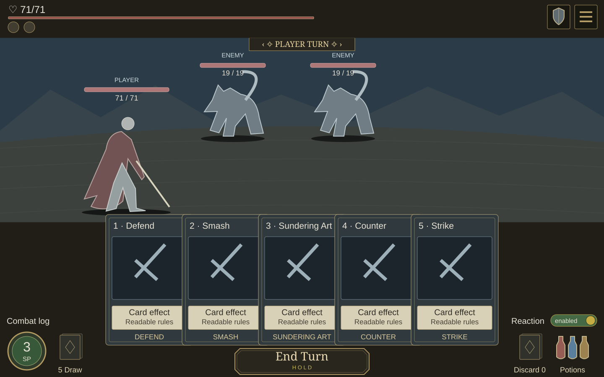
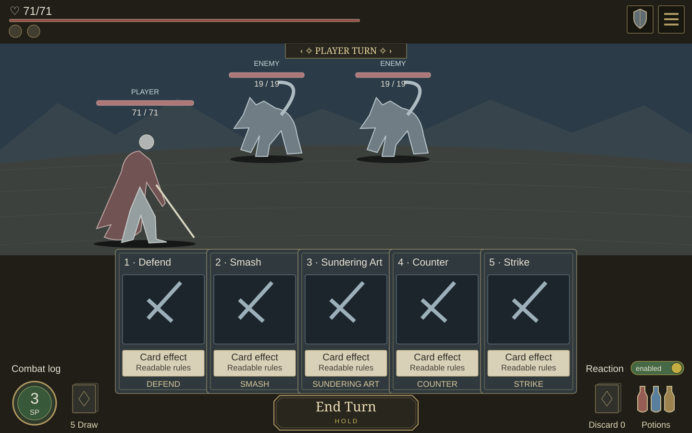
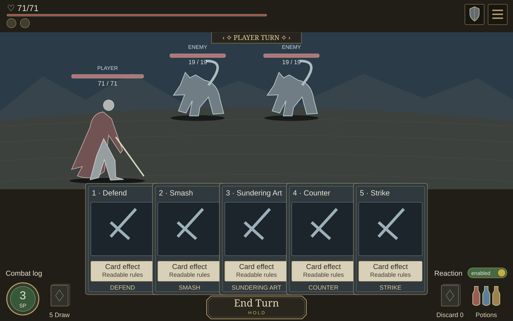
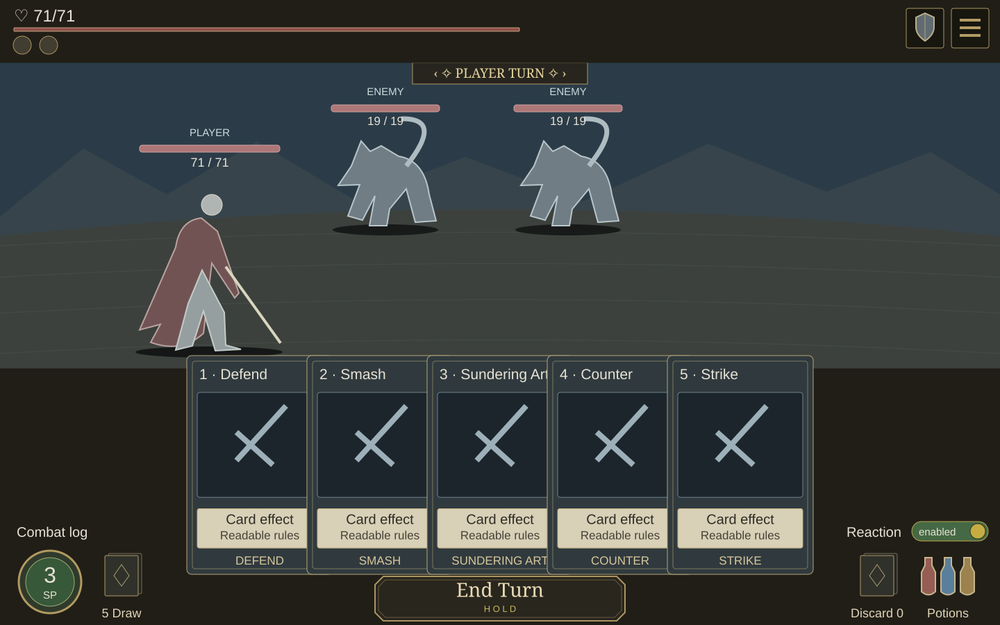

A · Literal split · recommended
Closest to the markup: large centered hand, fixed corner pairs, strong center action.
208×312 cards · 182px step · 320×62 End Turn

B · More exposed card faces
Slightly smaller cards with only 10px overlap; more of every face stays visible.
200×300 cards · 190px step · 300×72 End Turn

C · Larger flat hand
Larger faces and 32px overlap; a wider End Turn keeps the same bottom center.
210×315 cards · 178px step · 340×60 End Turn
D · Gentle fan
A small fan softens the hand; the first card still clears the player’s feet.
204×306 cards · 184px step · 320×68 End Turn
E · Wider centered hand
The hand spreads a little farther across the center; corner groups remain fixed.
208×312 cards · 188px step · 280×64 End Turn

F · Compact span · larger action
More card overlap gives the largest End Turn a clear center emphasis.
210×315 cards · 173px step · 360×64 End Turn

G · Largest faces · shallow fan
212px faces with a shallow fan; a shorter End Turn keeps room below the hand.
212×318 cards · 177px step · 340×58 End Turn
Fixed in every option
- Original header, scene bounds and actor sizes/anchors.
- Stamina + Draw at bottom left; Discard + Potions at bottom right.
- Combat log directly above the left group; Reaction directly above the right group.
- Much larger End Turn at bottom center.
- Larger centered hand; 2:3 card proportions.
- Continuous lower HUD background; no added panels.
Desktop review only. No mobile/tablet redesign, runtime changes, game rules or implementation.
Cards paint over the empty lower scene margin. The player stays at its approved size and position, with feet ending at y505 and first-card corners below that line.